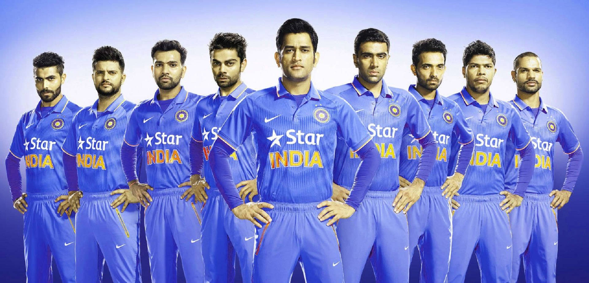

The British army took on the English settlers in what was the first recorded cricket match in India in 1751. The establishment of the Calcutta Cricket Club (what we know today as CC & FC) in 1792, was another watershed for the sport in the land. Cricket was brought to India in the early 1700s, with the first documented insurance of cricket being played in 1721. At the time of its introduction, it was used as a medium for Indians to integrate into British cultural norms. By serving as a bridge between the two groups, it made assimilating much easier.
 indian cricket team